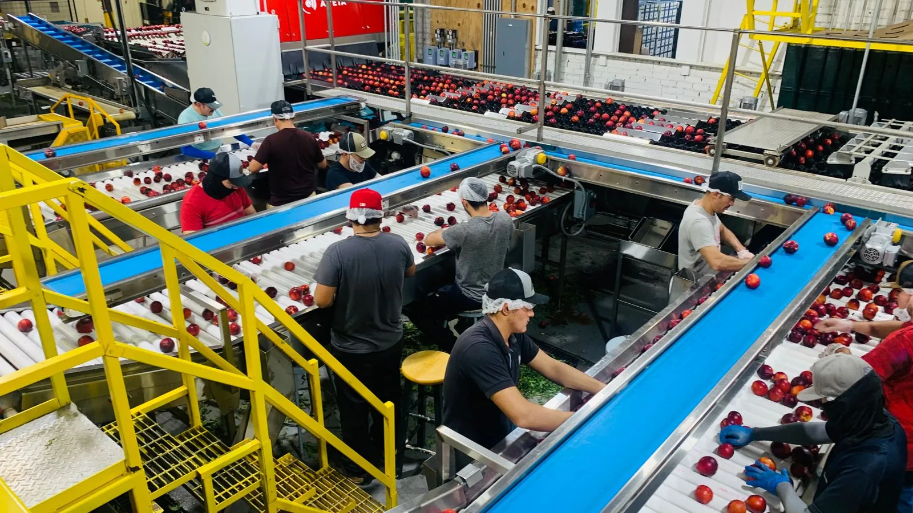

Chile parte la temporada de cereza 2026/27 con una proyección preliminar de 132 millones de cajas de 5 kilos, equivalentes a unas 667.000 toneladas de exportación sobre una producción estimada de 727.000 toneladas. Es un 16% más que la temporada pasada, que cerró en 569.492 toneladas tras caer 9%. Para quien compra cereza IQF, sulfitada o deshidratada, sin embargo, el dato que ordena el año no es el récord: es la fracción de esa cosecha que nunca va a subirse a un avión rumbo a Shanghái.
Una cosecha récord, y dónde está plantada
La cifra la publicó Frutas de Chile a comienzos de septiembre y todavía es preliminar: se ajusta a mediados de octubre, cuando la flor ya cuajó y se puede contar fruta en el árbol. El salto no viene de plantaciones nuevas sino de huertos que están entrando en régimen —los plantados entre 2021 y 2023, que recién al cuarto o quinto año producen comercialmente—. La superficie cosechable se estima en 76.000 hectáreas de 80.000 plantadas, concentradas en dos regiones: Maule con 32.801 ha (42,2%) y O'Higgins con 29.935 ha (38,5%). Entre ambas superan el 80% del país.
En variedades mandan Santina, Lapins y Regina —esta última creció 13%— mientras Bing, Sweetheart y Royal Dawn pierden terreno, y entran nombres nuevos como Sweet Aryana, Nimba, Pacific Red, Areko, Sweet Lorenz y Sweet Gabriel. El detalle varietal no es trivial para la industria: define calibre, firmeza y, sobre todo, grados Brix, que es lo que decide si una partida sirve para deshidratar o no.
El 20% que no sale en fresco
Toda cosecha de cereza deja fruta que no alcanza estándar de exportación en fresco: calibre bajo, pitting, partidura por lluvia, pedicelo desprendido, madurez despareja. Bruno Ceroni, gerente comercial de GoodValley —una de las plantas que deshidrata cereza en el valle de Colchagua—, estima esa fracción en torno al 20% de la producción total. Aplicado a las 727.000 toneladas proyectadas, hablamos de un orden de magnitud de 145.000 toneladas que necesitan un destino industrial o se quedan en el huerto.
Esa es la materia prima de la cereza congelada, sulfitada y deshidratada. Y explica por qué una temporada récord en fresco es, al mismo tiempo, una temporada de oferta abundante para quien compra producto procesado: cuanto más grande la cosecha, más grande el excedente industrial en términos absolutos.

Congelado, sulfitado y deshidratado: tres caminos que no son intercambiables
Los tres formatos parten de la misma fruta, pero exigen procesos y compradores distintos.
Cereza congelada IQF
Es el formato que más rápido creció: Chile exportó 8.690 toneladas de cereza congelada en 2024 y la proyección para 2025 era cercana a las 19.000. Se vende prácticamente siempre descarozada, lo que obliga a una línea específica —despalillado, deshuesado, lavado, congelado y selección por color, forma y rayos X— más lenta que una línea de fresco. En el sistema IQF los cristales de hielo que se forman son muy pequeños y no rompen la pared celular, de modo que la fruta no suelta líquido al descongelarse. Sus destinos principales son Estados Unidos, Canadá, China y Japón, con Europa y Turquía creciendo rápido. Gonzalo Bachelet, gerente general de Vitafoods y presidente de Chilealimentos, situaba el precio del congelado en torno a US$ 0,50 por kilo: muy por debajo del fresco, pero muy por encima de cero, que es lo que vale la fruta que se queda en el campo.
Cereza sulfitada
Es el formato más antiguo de la agroindustria chilena de la cereza y el que más ha retrocedido en los últimos años. La fruta se conserva en solución con SO₂, lo que la estabiliza a temperatura ambiente y la deja lista como materia prima para confitado, licores y decoración de repostería. Es el producto donde el calibre y la firmeza pesan más que el sabor.
Cereza deshidratada
Es la apuesta más reciente y la más exigente con la materia prima. Ceroni lo explica sin rodeos: las variedades tempranas no sirven, porque su Brix es bajo y el producto final queda sin sabor. Hay que trabajar con variedades medianas y tardías. La ventaja competitiva chilena es que parte de cerezas dulces y no necesita azúcar añadida, a diferencia de la cereza ácida que domina el mercado importado —un argumento que pesa en China, donde el consumidor premia lo natural—. GoodValley procesa entre 200 y 300 toneladas al año y coloca en China, Tailandia, Singapur, Malasia y algo en Norteamérica. Después de cinco años, su volumen sigue plano, y el propio Ceroni identifica el cuello de botella: falta desarrollo comercial, no capacidad de producción.
Por qué septiembre y octubre deciden la temporada
La cereza chilena se cosecha entre noviembre y enero. Un programa de compra de producto procesado —volumen, calibre, formato, incoterm y ventana de embarque— se cierra antes de que la fruta entre a planta, porque de eso depende qué línea se monta y qué materia prima se aparta. Quien llega en diciembre a preguntar precios compra lo que sobró, no lo que necesita.
Hay un segundo motivo para mirar esta temporada con atención. China y Hong Kong recibieron el 87% de los envíos chilenos de cereza fresca, la proporción más baja en unos ocho años, mientras los mercados alternativos crecieron 27% hasta 74.535 toneladas. La diversificación que está ocurriendo en fresco es la misma que empuja al procesado: cuando un solo destino deja de absorber todo, el resto de la cadena busca formatos que aguanten más tiempo y viajen más lejos.
¿Qué significa esto para el sector? — La mirada de Prunavita
En nuestra experiencia comprando y embarcando fruta procesada, el error más caro de un importador nuevo no es pagar de más: es especificar mal. Pedir "cereza congelada" sin decir si la quiere con o sin carozo, en qué rango de calibre y con qué tolerancia de defectos, produce una partida que cumple el contrato y no sirve para la línea de destino. Lo mismo con la deshidratada: dos lotes con el mismo nombre y distinto Brix dan productos finales que el consumidor distingue de inmediato.
Por eso publicamos las especificaciones antes de cotizar y no después. Cada formato de nuestra línea de cerezas chilenas —IQF, descarozada, sulfitada, deshidratada y pulpa— tiene su ficha técnica descargable con calibre, Brix, humedad, parámetros microbiológicos y vida útil por formato. Y si la operación se arma desde el exterior, nuestra representación comercial en origen verifica proveedor, inspecciona antes del embarque y supervisa la carga.
Con una cosecha proyectada en récord y un excedente industrial que crece en la misma proporción, 2026/27 debería ser una temporada de buena disponibilidad. La ventana para cerrar programa, en cambio, se cierra en octubre.
Fuentes consultadas: Smartcherry, FreshPlaza, Portalfrutícola — cereza deshidratada y Portalfrutícola — cereza congelada. Análisis y redacción: equipo Prunavita.